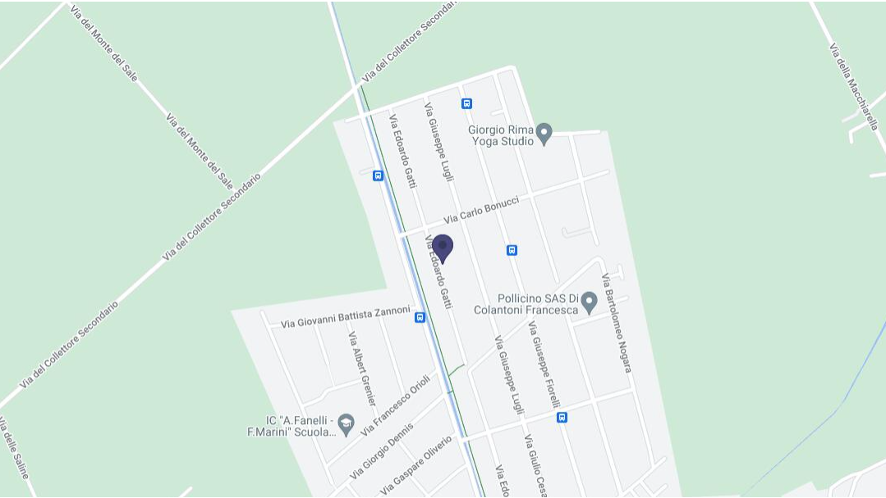

DOCUMENTI NECESSARI PER LA COMPILAZIONE DEL MODELLO 730/2025 (REDDITI 2024)
Per la corretta compilazione della dichiarazione dei redditi Modello 730/2025, è necessario presentare la seguente documentazione relativa all’anno d’imposta 2024.
DOCUMENTI PERSONALI
- Documento di identità e tessera sanitaria del dichiarante, del coniuge e dei familiari a carico.
- Credenziali SPID (se disponibili, per agevolare l’accesso alla dichiarazione precompilata).
- Modello 730 o Redditi PF 2024 (se disponibile, per il confronto con l’anno precedente).
CERTIFICAZIONI DEI REDDITI
- Certificazione Unica (CU) 2025 relativa ai redditi percepiti nel 2024 (lavoro dipendente, pensione, collaborazioni, ecc.).
- Certificazioni relative a redditi di lavoro autonomo occasionale.
- Certificazioni di altri redditi percepiti (affitti, dividendi, redditi esteri, ecc.).
IMMOBILI E LOCAZIONI
- Visure catastali o atti di proprietà (solo in caso di variazioni rispetto all’anno precedente).
- Contratti di locazione con estremi di registrazione (per immobili affittati).
- Atti di successione in caso di eredità di immobili.
SPESE DETRAIBILI E DEDUCIBILI
Spese sanitarie
- Fatture, ricevute, quietanze di pagamento e scontrini fiscali parlanti per visite mediche generiche e specialistiche, odontoiatria, acquisto di farmaci, occhiali da vista, lenti a contatto, protesi, esami di laboratorio e terapie riabilitative.
- Certificati medici per usi sportivi o per il rilascio della patente.
- Documentazione di eventuali rimborsi ricevuti (indicando l’importo non rimborsato dalla polizza sanitaria, se presente).
Interessi su mutui
- Certificazione degli interessi passivi su mutui per acquisto o ristrutturazione dell’abitazione principale.
- Fattura del notaio e perizia della banca (se il mutuo è stato stipulato nel 2024).
- Fattura intermediazione immobiliare acquisto prima casa.
Spese di istruzione
- Ricevute per tasse scolastiche e universitarie.
- Ricevute per spese di mensa scolastica.
- Prospetto delle spese detraibili per istituti privati.
Asili nido
Premi assicurativi
Spese sportive per i figli
Spese funebri
Spese veterinarie
Erogazioni liberali
Spese per assistenza personale soggetti non autosufficienti
Contributi previdenziali ed assistenziali
Contributi per addetti ai servizi domestici e familiari
Previdenza complementare / fondo pensione
Assegno periodico al coniuge
Adozioni
Versamenti F24
Contratti di locazione agevolati (Legge 431/98)
Dove siamo
Orari di apertura: lun-ven: 09:00 –13:00, 15:00–18:00 sab-dom: Chiuso

Indirizzo: Via Edoardo Gatti, 106A - 00119 Ostia Antica, RM Italia